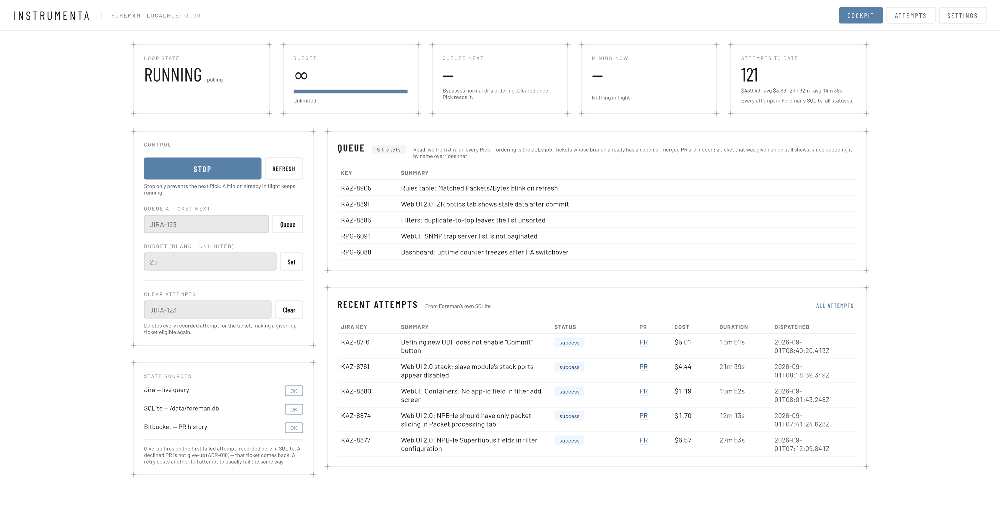
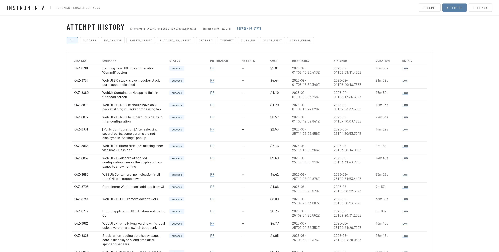
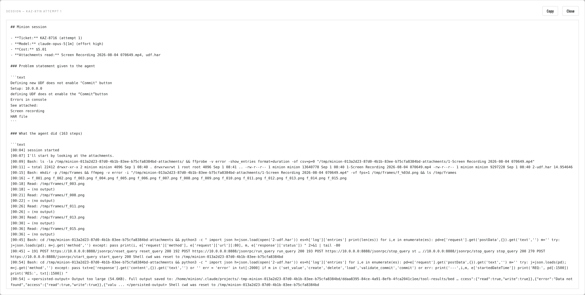

Instrumenta
An agent that works the Jira backlog on its own: picks a ticket, fixes it in CGS/webui, opens a pull request, moves to the next one.
Written for people who don't use these tools daily
What this is
- A working system, not a demo — it ran unattended overnight and opened real pull requests against CGS/webui.
- Every number here comes from a database, a git history or the Bitbucket API. Nothing is estimated unless it says so.
- Including the numbers that don't flatter it.
What it is not
- Not a claim that this replaces anyone. The interesting result is where the work moved, not where it disappeared.
- Not a tour of the model. The model is a component; the engineering is everything around it.
Where we're going, in order
| 01 | Why — what the backlog actually looks like, measured over ten years |
| 02 | How it's built — two containers, one loop, one gate |
| 03 | What happened — 121 attempts, four run days, the real outcome |
| 04 | One pull request, start to finish |
| 05 | The harness in webui — the part that makes any of this possible |
| 06 | What broke — nineteen decisions, most of them written after something failed |
| 07 | Where it goes next — four specialists instead of one generalist |
Screenshots throughout are taken from the real attempt database, not mocked. Interrupt with questions as we go — the material is denser than it is long.
Three numbers, and then the one that matters
20 of those 121 pull requests are merged. Another 32 are approved and waiting to be merged. 67 have never been looked at. Split by which backlog they came from, that becomes the most useful finding in this report.
PR states read live from the Bitbucket API on 09 Sep 2026. Attempt data from Foreman's SQLite, dispatches between 23 Aug 15:08 UTC and 01 Sep 08:40 UTC.
Why this,
and why now
Before writing a line of it, we measured the thing it was supposed to help with — ten years of the target project's own history.
The shape of the work, not an opinion about it
Why 95% is the whole bet
A backlog of 200-file refactors would not be a candidate. A backlog where nearly every ticket is one or two commits is a backlog of small, local, well-bounded fixes.
That is the class of work where an agent can plausibly get from "here is a bug report" to "here is a diff" without a human steering each step.
How long a ticket took a person
- 60% of tickets took under an hour. The same story the 95% above tells, measured a second way.
- Measured on 1,944 of the 2,341 tickets: every commit is credited with the time since its author's previous commit that day.
- Still a floor — the first commit of a day has nothing to measure against, and reading, reproducing and reviewing leave no commit at all.
91% of tickets are finished inside a single day of work
Commits per ticket
| 1 commit | 1,858 | 79% |
| 2 commits | 369 | 16% |
| 3 commits | 57 | 2% |
| 4–5 commits | 40 | 2% |
| 6 or more | 17 | 1% |
95% are two commits or fewer — the shape the agent was built to attempt, and the shape it produced: 121 pull requests, one commit each.
Calendar span, first commit to last
| Same day | 2,132 | 91% |
| 1 day | 31 | 1% |
| 2–7 days | 72 | 3% |
| 1–4 weeks | 55 | 2% |
| 1–3 months | 31 | 1% |
| Over 3 months | 20 | 1% |
A heavy tail: among the 483 multi-commit tickets the median span is 0.4 days, the mean 18.4. A handful dragged for months and pull the average alone.
This is commit span, not Jira lead time — it starts at the first commit, so the months a ticket sits in the backlog before anyone begins are not in it.
One in six webui tickets is closed without a fix
2,204 webui tickets, whole history
| Outcome | Share | Meaning |
|---|---|---|
| Completed | 63% | Fixed and closed |
| Abandoned | 16% | Won't Do, Cannot Reproduce, Duplicate, Works As Designed, Defer |
| Still open | 18% | Never resolved either way |
Webui work only — labelled WebUI/Web_UI_2.0, or webui named in the summary. Task / Bug / Story only.
Almost all of it does reach code
2,204 webui tickets in Jira; 2,341 tickets referenced in webui commits.
So the backlog is not full of work nobody ever started. What it has instead is a sixth that gets closed unfixed.
It was never that the fixes were hard. It was that one reported problem in six was never fixed at all — and the cheapest way to find out whether a "Cannot Reproduce" is real is to have something attempt it.
Autonomy means it keeps going when nobody is watching
The loop we set out to build
- Trigger — the last task finished, or the poll interval elapsed.
- Pick the next ticket from Jira, live, in Jira's own order.
- Solve it: implement, verify, commit, open a PR. Failure is a recorded outcome, not silence.
- Leave knowledge behind in the target project, so the next ticket is cheaper.
- Wait. An empty queue means poll again later, not sit idle.
What we deliberately did not build
- No new control surface. Priorities in Jira, rules in the repo. The next attempt reads whatever is there now.
- No merging. Autonomy stops at review, on purpose.
- No parallelism, one project. Strictly serial, for the first version.
Its scope of control, complete
stop start queue[ticket] budget
Four buttons. Everything about what gets worked on stays in Jira and the target repo, where it already lived.
How it's built
Two containers, one loop, one gate. About 3,800 lines of TypeScript, and 5,700 lines of tests around them.
Foreman decides. Minion does the dangerous part.
Foreman — long-running daemon
- Runs continuously: picks, dispatches, records, mirrors status to Jira.
- Owns SQLite on a persistent volume — every attempt, status, cost, PR, and what the agent did.
- Serves a thin JSON API and one HTML page.
- Never executes anything the model or the target repo asked for.
Minion — one container per attempt
- Started with three facts: ticket key, task id, attempt number. Reads the ticket itself.
- Runs Claude Code with
--dangerously-skip-permissions— nobody is there to approve tool calls. - The container boundary is what pays for that. Disposable, isolated, destroyed on exit.
- No API of its own. Foreman waits for exit and reads one result from stdout.
An unattended agent with full tool access is either sandboxed or it is a liability. Everything else — the gate, the statuses, the one-attempt rule — is downstream of getting that boundary right first.
Foreman, in fifteen lines
while not stopped:
task = pick() # Jira query + eligibility check
if task is None:
sleep(poll_interval)
continue
result = dispatch(task) # start Minion, wait for exit
record(result) # SQLite: status, PR url, cost, session
mirror_status_to_jira(task, result)
if budget is set:
budget -= 1
if budget == 0: break
Foreman is a daemon, not a cron job. It decides its own next trigger, which means an empty queue costs one poll rather than a scheduled wake-up that has to guess.
What pick() excludes
- Anything the Jira query doesn't return — ordering and "still wanted" are the query's job, never Foreman's.
- Any ticket whose branch already has an open or merged PR.
- Any ticket Foreman has already given up on.
Why that matters
Foreman keeps no copy of the backlog. Reprioritise in Jira and the next pick() sees it — no sync step to get wrong.
Three sources of truth, each answering a different question
| Source | Answers exactly one question | Why it can't be merged into the others |
|---|---|---|
| Jira live query, every pick | Is this ticket still wanted at all? | A human cancels or reprioritises in Jira. Copying that into our own store means reconciling it forever. |
| Foreman's SQLite persistent volume | What has Foreman itself observed — including a crash or a timeout with no PR to show for it? | A Minion that dies leaves no branch and no PR. Nothing outside Foreman knows the attempt ever happened. |
| Bitbucket PR history | Does this ticket's branch already have an open or merged PR? | Work awaiting a human's review, or already delivered. Re-dispatching over it wastes a full attempt. |
Three sources, not three copies
None of them votes on the same fact. There is no "which one is right" logic anywhere in the codebase, because the question never arises.
One correction, made later
Bitbucket originally also fed the give-up decision: a closed PR retired the ticket. A declined PR is not a verdict on the ticket — it usually means the attempt was wrong, not the work unnecessary. Give-up is now SQLite's alone.
What a Minion actually does, in order
- Clone, on a branch named for the ticket —
KAZ-8880, not a UUID. - Set up the checkout:
npm ci, install the pinned skills. Before the agent starts — skills load at session start. - Read its own ticket from Jira, attachments included.
- Implement. Full tool access, no human present.
- Run the gate the project defines, plus its pre-commit checks.
- Commit and open the PR — only if the gate passed.
Step 3 is not a detail
For a UI bug, the attached screenshot is the bug report. An agent that can't open it is guessing.
The cost: Minion holds Jira credentials. Accepted deliberately.
Step 1 was measured at 5–7 minutes
Every attempt, because the container is disposable. A shared bare mirror turned it into seconds.
The target project defines "done". We never invent it.
The rule
Before committing, Minion looks for a verify mechanism already defined in the target project.
- Missing → no commit, no PR. Write a note saying so, and stop.
- Fails → no commit.
- Passes → run the project's pre-commit hook too, then commit and open the PR.
The commit uses --no-verify — those checks already ran once, in the gate. Re-running them inside a commit that can only fail costs a whole attempt.
Why this and not our own test rule
We never decide what "working" means in a codebase we don't own. And we only ever change it through the same kind of PR a human would open.
If the project's gate is weak, the agent's work is gated weakly. Not a bug in the agent — a property of the project, now visible.
The gate that passed unconditionally, for weeks
/** * Found live on CGS/webui, whose `verify` script is the * literal string `true`. hasVerifyScript saw a script and * runVerify ran it, so the gate passed unconditionally on * every attempt — the protection against committing work * that does not build, doing nothing at all. * * Its real checks are `npm run lint` and `npm run test`; * its canonical entry points, `make lint` and `make test`, * wrap those in `sudo webuic/webuic.sh`, needing a container * and root that a Minion has neither of. The commands * underneath are reachable, so a deployment can name them. */ export function verifyCommand(): string { return process.env.MINION_VERIFY_COMMAND?.trim() || 'npm run verify' }
What went wrong
The convention assumes a project can offer a working verify. This one has a script by that name whose entire body is true. It exits zero. Always.
What we changed
An environment variable lets a deployment name the real command, run through sh -c so several checks can be chained.
The same command string is quoted into the agent's prompt — so what the agent is told to run and what the gate actually runs cannot drift apart.
Only findable by running it against a real repository.
Nine things an attempt is allowed to conclude
| Status | Meaning | Consequence |
|---|---|---|
| success | Gate passed, commit made, PR opened | Ticket mirrored to In Progress — not Done. A human still reviews. |
| no_change | Gate passed against an unmodified tree, and the agent reported it concluded nothing was needed | Terminal. Explained to a human in a Jira comment, because the pipeline can't verify the claim itself. |
| failed_verify | Gate ran and failed | No commit, no PR. |
| blocked_no_verify | The project offers no gate at all | No commit. A note written into the project saying so. |
| crashed timeout | Minion died, or Foreman killed it past the limit | Recorded by Foreman directly — nothing else would know it happened. |
| usage_limit | The Claude subscription's limit was exhausted mid-run | Stops the whole run. Nothing committed, no Jira comment, ticket walked back out of In Progress and left eligible. |
| agent_error | An upstream API failure, not a conclusion about the ticket | Same treatment. This is not the ticket's fault. |
| given_up | The attempt budget for this ticket is spent | Minion writes a give-up note into the project first, through the same PR path a human would use. |
Three of these nine — no_change, usage_limit, agent_error — exist because all three once looked identical from the outside: an empty diff. More on that shortly.
The instructions, and what each paragraph is defending against
This is an unattended, one-shot run — there is no human available to
answer questions or approve a plan. Investigate the issue and implement
the fix directly in the codebase yourself. Do not stop to describe or
propose a fix and ask for confirmation; make the actual code changes.
Make the smallest change that fixes the stated problem, and stop there.
Match how the surrounding code already does things rather than
introducing a pattern of your own. Do not refactor code that is not
broken, do not add an abstraction for a single use, do not add a
dependency, a config option or a new file unless the fix genuinely
cannot be made without it. If a one-line change is enough, the answer
is that one line.
If you notice something else wrong along the way, leave it alone and say
so in your report. A diff a reviewer can read in a minute is worth more
here than a thorough one they will not read at all.
The gate that decides whether your work is committed runs exactly this,
from the repository root:
${verifyCommand()}
Run that same command yourself and see it pass. Report a check as
passing only if you actually ran it and watched it pass — not because
it ought to.
Paragraph by paragraph
- "No human available" — without it the agent writes a plan and waits. The container exits. Attempt wasted.
- "Smallest change" — the default failure mode is a 400-line diff that fixes 4 lines.
- "Leave it alone and say so" — somewhere to put what it noticed, instead of fixing it.
- "Watched it pass" — a model reports a check as passing because it should pass. This sentence exists because that happened.
It then specifies the exact report format — which becomes the PR description a human reads. You will see one.
Flat-rate subscription, never a metered API key
The decision
Minion authenticates with a subscription OAuth token. Never ANTHROPIC_API_KEY.
Enforced, not documented: a hook blocks any commit that introduces per-token billing — not for a fix, not for a test, not temporarily.
Why it is enforced rather than trusted
- 60 attempts overnight on metered billing is an unbounded bill, found the next morning.
- A subscription has a ceiling. Hit it and the run stops with
usage_limit. - "We'll remember not to do that" is not a control. A hook is.
What is still measured
Every attempt records its own reported spend. That is where $439.49 across 121 attempts comes from — measured per attempt, not a slice of a monthly fee.
Model and reasoning effort are pinned per deployment, so cost per attempt doesn't move when the CLI's defaults do.
One page, four controls, three state sources

Served from the same container as the API. No build step, no separate CLI — the JSON API is the only scriptable surface, and this page is its only other consumer.
Every attempt, its cost, its duration, its pull request

The status filters across the top are the nine outcomes from earlier. Live PR state is fetched from Bitbucket and cached, so leaving this tab open doesn't hammer the API.
The container is gone. The record of what it did is not.

Written for every outcome, including success. A successful attempt used to record nothing at all — which meant the one outcome that produces a pull request was also the one nobody could audit.
What the agent did in the first 45 seconds of KAZ-8716
- **Ticket:** KAZ-8716 (attempt 1)
- **Model:** claude-opus-5[1m] (effort high)
- **Cost:** $5.01
- **Attachments read:** Screen Recording 2026-08-04 070649.mp4, udf.har
### Problem statement given to the agent
Defining new UDF does not enable "Commit" button
Setup: 10.0.0.0 ← lab address, redacted
defining UDF does ot enable the "Commit"button
Errors in console
See attached: Screen recording, HAR file
### What the agent did (163 steps)
[00:04] session started
[00:07] I'll start by looking at the attachments.
[00:09] Bash: ls -la /tmp/minion-.../attachments/ && ffprobe -v error
-show_entries format=duration ... "1-Screen Recording ....mp4"
[00:15] Bash: mkdir -p /tmp/frames && ffmpeg -v error -i "1-Screen
Recording ....mp4" -vf fps=1 /tmp/frames/f_%03d.png
[00:16] → f_001.png f_002.png f_003.png ... f_015.png
[00:18] Read: /tmp/frames/f_003.png
[00:26] Read: /tmp/frames/f_011.png
[00:45] Bash: cd .../attachments && python3 -c " import json
h=json.load(open('2-udf.har')) es=h['log']['entries'] ...
Nobody told it to do this
The ticket body is five broken lines and a typo. The actual bug report is a screen recording and a HAR file.
The agent ran ffprobe to check the video's length, ffmpeg to cut it into one frame per second, read the frames as images, then parsed the HAR with Python to find the failing request.
Why this slide is here
This is the difference between "it generates code" and "it investigates". And it is only visible because the session record exists.
Result: PR #396, merged. $5.01, 18m 51s.
Small on purpose, tested heavily on purpose
The largest file is 527 lines
The Foreman side — loop, pick, dispatch, API, Jira mirror, SQLite — is 1,911 lines. Minion is 1,856. Everything else is tests.
A system that runs unattended and spends money has to be small enough that one person can hold all of it in their head.
The 1.5× test ratio is not vanity
There is no staging environment for "dispatch 60 containers overnight against a production repository". The tests are the only place most of these paths get exercised before they run for real.
What actually
happened
121 attempts across four run days. Every figure on the next eight slides is read from Foreman's SQLite or the Bitbucket API, not reconstructed.
It ran overnight, unattended, and nobody had to be there
| Date | Window (UTC) | Backlog | Attempts | Spend |
|---|---|---|---|---|
| 23 Aug | 15:08 → 23:55 | legacy | 38 | $138.56 |
| 24 Aug | 00:07 → 17:04 | legacy | 62 | $230.30 |
| 25 Aug | 06:34 → 14:06 | sprint | 16 | $51.73 |
| 01 Sep | 07:12 → 08:40 | sprint | 5 | $18.90 |
| Total | 29h 32m of machine time | 121 | $439.49 |
23 Aug 15:08 straight through to 24 Aug 17:04. 100 attempts, one continuous stretch, across a night. Nobody queued them, watched them or restarted anything.
Historical team rate: ~20 tickets a month reach a commit. This attempted 100 in 26 hours.
Two shaded rows, one batch
23–24 August was the official run, and the last one: 100 attempts against the legacy backlog, closing the build. Development stopped that day.
The 21 attempts after it were follow-ups on live sprint tickets. Remember that division — the next few slides turn on it.
Cost per attempt, all 121
Reading the tail
The seven attempts over $8 are the ones where the ticket needed real investigation — a race condition on a toggle, a branding change touching a dozen icon assets, a state bug that only appears after enable-disable-enable.
Those are also, unsurprisingly, the longest ones.
Wall-clock per attempt, all 121
The comparison, with its scope stated
A ticket took a person ~40 minutes typically, ~2 hours on average. An attempt here takes 12 minutes.
Both human figures are floors, and the 12 minutes excludes the review that still has to happen. The gap is real but modest — this was never going to be a hundredfold story.
All 121 recorded attempts say success. That is not a success rate.
What the database actually contains
121 rows. Every one success. Every one with a PR.
Putting "100%" here would be easy, and wrong:
- This database was created 23 Aug — after the failures below were found.
- The Cockpit can clear a ticket's history deliberately.
successmeans the gate passed and a PR opened. Not that the fix was right.
The only verdict worth trusting is what a human did with the pull request. Measured, external to us, next slide.
Evidence the failures were real
Six decision records in three days, 22–24 August — each written after an attempt failed in a new way.
121 pull requests, judged by humans
masterThe honest denominator is 54, not 121
54 of these pull requests got a review verdict of any kind. 52 of those 54 were positive — 20 merged, 32 approved.
Not one of the 100 open pull requests carries a single review comment. Where a reviewer engaged, they approved; where they didn't, they didn't open it at all.
Approved but unmerged is a different problem
Those 32 are not a quality backlog. A human read the diff and said yes. They are unmerged because the fixes don't belong to a version anyone is currently shipping.
For context: 422 pull requests exist in CGS/webui across its whole history. Instrumenta opened 121 of them, in four days.
Two backlogs, the same agent, opposite outcomes
Current sprint tickets — the follow-up runs
21 attempts on 25 Aug and 1 Sep. $70.63 total, average $3.36. Someone owned these tickets, wanted them this sprint, and reviewed the PRs within a day or two.
Legacy backlog — the official 23–24 Aug batch
100 attempts, $368.85 total, average $3.69. Old tickets nobody was waiting on. A third were reviewed and approved; two thirds have never been opened since 24 August.
Writing the code stopped being the constraint
An agent produces pull requests far faster than this team historically closed tickets. It cannot produce review capacity, and it cannot put a fix into a release nobody planned. So the queue moved twice.
Two different queues, not one
- 67 never reviewed — an attention problem. A correct fix nobody reads is indistinguishable from no fix.
- 32 approved but unmerged — a release-planning problem, and a different one. The tickets aren't in a version being shipped.
- Neither is a quality problem. Same agent, prompt, gate and week.
What we'd do differently tomorrow
Pick tickets attached to a version someone is shipping. Budget unmerged work in flight, not dispatches.
And why we are building a chain of four agents
If review is the constraint, the next thing to build is not a faster coder — it is everything that happens before a human opens the diff.
What a merged pull request cost
Three numbers, one system, one week
$3.72, $11.18 and $368.85 all came out of the same agent running the same prompt against the same gate.
The spread is not explained by anything the agent did. It is explained entirely by how far the work got through a human process afterwards.
Which number to quote
$11.18 is the fair one for the legacy batch — a third of that work is reviewed and accepted, sitting behind release planning rather than behind doubt.
$368.85 is what it cost to actually ship one change from that batch. Both are true; they measure different things.
One pull request,
end to end
KAZ-8880. $1.19, 15 minutes 52 seconds, four files, twelve added lines, zero review comments, merged.
"Containers: No app-id field in filter add screen"
What the ticket said
On NPB-IOT, the Output App Id field is missing from the Attributes tab when creating or editing a filter. It should be there — that board runs container applications, so a filter can redirect traffic to one by app id.
Priority: high. Reported against one board. Nothing about the other boards, nothing about why it broke.
What it found
The field is force-hidden for every board by a shared default. Boards that run containers are supposed to opt back out with one explicit line. An earlier ticket added that opt-out to two boards and missed three.
Twelve lines, three of them a test
diff --git a/apps/webui2/src/entities/deviceConfig/devices/npb-iot.ts
@@ -52,6 +52,8 @@ const deviceConfig: DeviceConfig = {
'set-track-ip': true,
'set-ipfix': true,
+ // Runs container applications, so a filter may redirect to one by App ID.
+ 'output-app-id': undefined,
},
… the same two lines in npb-1e6.ts and npb-1e6-xl.ts …
diff --git a/apps/webui2/tests/entities/deviceConfig/outputAppIdGating.spec.ts
@@ -19,6 +22,9 @@ describe('output-app-id device gating', () => {
it.each([
['NPB-Ie8', npbIe8],
['NPB-IIe', npb2e],
+ ['NPB-IOT', npbIot],
+ ['NPB-Ie6', npbIe6],
+ ['NPB-Ie6-XL', npbIe6xl],
])('exposes Output App Id on %s, which runs container applications', (_name, config) => {
expect(hidesOutputAppId(config)).toBe(false)
Note what it didn't do
No refactor of the shared default. No abstraction for "container boards". No tidying of the surrounding file.
Note the test
It extended an existing table-driven test and pinned all three boards — so the next person to touch the shared default breaks a test, not the UI.
Written by the agent, for the reviewer
## What changed
`output-app-id` is force-hidden for every board by the shared
`defaultAttributesHideFields` in .../entities/deviceConfig/config/filters.ts,
and only the boards that run container applications opt back out with an
explicit `'output-app-id': undefined`. Commit 78b8c6d2a (KAZ-8106) added that
opt-out to npb-1e8.ts and npb-2e.ts only, so the field vanished from the
Create/Edit Filter Attributes tab on the other container boards.
The ticket reports NPB-IOT, but the fix now covers **all** affected boards…
## Why these boards and no others
Verified against the legacy parity authority, not just the ticket: legacy gates
the App ID input with `controller.isTd3()` (filter-table-docker-index.html, the
`<!-- Output App Id -->` block), and `device-info.service.js` defines
`isTd3() = isNpbIe8() || isNpbIIe()` with `isNpbIe8()` explicitly folding in
Ie6, Ie6-XL, and IOT ("they all use the same chip"). So legacy shows the field
on exactly five boards — which matches the five webui2 device configs
declaring `DeviceRoutes.CONTAINERS`.
## Verification
- outputAppIdGating.spec.ts now asserts exposure on all five container boards
and hiding on NPB-III, NPB-IV, ANPB.
- Full webui2 suite: 852/852 passing; `tsc --build` and eslint clean.
- **Not verified on real hardware — config/test reasoning only.**
The middle section is the point
The ticket said NPB-IOT. The agent went to the legacy AngularJS app — the parity authority for this behaviour — read how it gates the same field, found the comment "they all use the same chip", and derived the correct set of five boards.
And the last line
"Not verified on real hardware — config/test reasoning only."
It told the reviewer exactly what it did not check. That sentence is worth more to a reviewer than the diff.
Two approvals, zero comments, merged the next day
Not an outlier
Of the 20 merged pull requests, 18 were merged with zero review comments. One drew a single comment; one drew two.
Where a human looked at the work, it was usually taken as written.
What that does and doesn't prove
It proves the diffs were reviewable and the reasoning was checkable. It does not prove the fixes work on hardware — the gate is types, lint and unit tests, and every PR says so.
Closing that gap is what the UI-tester stage is for, later in this talk.
The harness
in webui
Every Minion container is destroyed on exit. 121 attempts meant 121 agents that woke up knowing nothing, did a day's work, and forgot all of it.
If that sounds like Memento — it is exactly that problem, and the harness is the answer Leonard came up with: notes, procedures, and the handful of facts you tattoo on yourself because you cannot afford to lose them.
A harness is the target project telling the agent how it works
The problem it solves
A model dropped into an 8,338-commit Vue 3 + legacy AngularJS monorepo will write plausible code that is wrong for that repository: the wrong layer, the wrong colour tokens, a service where a composable belongs, a commit message the linter rejects.
It has no way to know. Nothing in the code says so.
Four kinds of thing, four mechanisms
| Rules | Written instructions read every session — CLAUDE.md, .claude/rules/ |
| Skills | Deep knowledge loaded only when relevant — 25 of them |
| Hooks | Code that runs on events and can refuse — 10 of them |
| Subagents | Tool-restricted readers that keep big output out of the main context — 3 |
Rules and skills are things the agent is told. Hooks are things the agent cannot get around. Both are needed, and they are not interchangeable.
Four files, four jobs, and one rule about conflicts
| File | Owns | Read when |
|---|---|---|
CLAUDE.md98 lines | Policy, and nothing else. Run make verify before every change · every module has an index.ts public API and imports only go downward through the layer hierarchy · a decision tree for service vs composable vs store, so nobody invents a fourth pattern · themed Tailwind only, never semantic colour classes · Conventional Commits, lowercase imperative, ticket in the footer, no AI-attribution trailers | Every session, in full |
docs/reference/13 documents | The depth underneath the policy — hooks, skills index, module structure, data-loading patterns | Only when the task touches them |
.claude/rules/ | Rules scoped to file patterns — styling, general conventions | Automatically, on a pattern match |
AGENTS.md24 lines | Not policy at all. Machine-readable runtime metadata in YAML: the verify commands, the repo paths, the coverage thresholds | By a runtime, not a person |
Two axes, not a waterfall
A policy conflict is won by CLAUDE.md; a runtime conflict by the runtime config. On "which command runs the tests", AGENTS.md is the authority.
Why the split exists
Each tool looks for its own filename. Without a rule the same policy is pasted into all of them, and drifts the moment one is edited alone. A Copilot user must still open CLAUDE.md — that friction is the mechanism.
25 skills written in webui, 6 more pinned from outside
The 25 written here, by category
| Device & domain | 8 | One YANG-schema skill per product line, plus a device-specs skill |
| Architecture | 6 | Module boundaries, store organisation, routing, DI pattern, legacy conventions, domain modelling |
| Vue & testing | 3 | Testing conventions, singleton patterns, service DI pattern |
| Data & RPC | 2 | ConfD JSON-RPC, export-modal error handling |
| Process | 4 | Investigate a bug, mark ready for test, write an ADR, write a todo |
| Build & branding | 2 | Docker build, branding and theming |
The 6 external ones cover general Vue and component-library practice — knowledge that isn't ours to maintain.
Pinned by hash, not by name
"vue-best-practices": {
"source": "vuejs-ai/skills",
"sourceType": "github",
"computedHash": "3df585ad31aec78fe55c56c1411262737e6b2316…"
}
Six external skills, each locked to a content hash in skills-lock.json. An upstream edit cannot silently change how the agent works here.
Installed before the session starts
Skills are discovered when a Claude Code session opens. That is why Instrumenta runs a setup step between the clone and the agent — a prompt instruction to install them would arrive too late.
The YANG skills: facts the agent would otherwise invent
Eight product lines, eight skills
| Skill | Board | What only it knows |
|---|---|---|
cgs-india-yang-tree | NPB-Ie | MPLS parsing modes, egress-action restrictions |
cgs-napoli-yang-tree | NPB-III | ZR optics, line-code on 4×50 breakout, post-FEC PRBS |
cgs-cuba-yang-tree | NPB-IV | Queue/buffer management, FADT, port shaping |
cgs-volluto-yang-tree | 4 boards | Capabilities shared across the Ie6 / Ie6-XL / Ie8 / IOT family |
cgs-ristretto-yang-tree | NPB-IIe | Per-port capability lists, DLB thresholds |
"Which classifiers does NPB-Ie8 support?" has exactly one correct answer, it lives in a YANG schema, and a model with no access to it will produce a confident, plausible, wrong list every single time.
The rule these skills encode
Cited facts, never schema dumps. A skill that pastes 4,000 lines of YANG into context is worse than none — it crowds out the actual task.
Ten hooks — the rules the agent cannot talk its way past
| Hook | Fires on | What it does |
|---|---|---|
git-safety-guard | every Bash call | Blocks push --force, reset --hard, clean -f, branch -D, checkout --, restore |
verify-minimal-change | every commit | Runs a headless review of the staged diff and blocks the commit on an explicit "doing more than asked" verdict |
block-ai-commit-trailer | every commit | Rejects Co-Authored-By and AI-attribution trailers |
guard-adr-immutability | Edit / Write | Blocks edits to the body of an already-committed decision record. Only the status may change |
archive-resolved-todos | every commit | Removes resolved todos from the index; deletes or archives the file depending on whether anything still references it |
lint-fix-on-edit | after Edit / Write | Runs the linter's autofix on the file just touched |
warn-semantic-colors | after Edit / Write | Flags raw Tailwind colour classes that break theming |
require-verify-on-stop | session stop | Reminds when there are uncommitted changes with no passing verification since |
snapshot-state-on-compact | before compaction | Writes the working state to a file so it survives the context being summarised |
document-session-learnings | session end | Stages anything worth permanent documentation as draft notes for the next session |
All fail-open: a hook that errors never blocks work, and the only blocking outcomes are explicit verdicts. A flaky hook that halts the pipeline is worse than a missed check.
An LLM reviewing the diff before the commit is allowed
verify-minimal-change.sh
- Fires on every
git commit, before it runs. - Sends the staged diff to a headless review with no tool access — diff text only.
- Asks one question: is this the minimal change for the stated goal?
- Blocks only on an explicit "fail" verdict.
- Fails open on timeout, error, or a diff over 1,500 lines.
Why a model and not a linter
"You changed 300 lines to fix 4" is a judgment about scope. No linter can make it — and it is the most common way agent output goes wrong.
Why it is allowed to block
It is cheap, bounded, fail-open: 45-second timeout, small model, no tools. Worst case is an unchecked commit — never a stuck pipeline.
A model can be a gate, not just a generator — if it is cheap, asks one question, and fails open.
Decisions are append-only. Sessions leave notes behind.
Append-only decision records
Once committed, a decision's body cannot be edited — a hook blocks the write. Superseding it means a new numbered record.
These are the tattoos. Every other note in the harness can be rewritten.
A memory you can revise to suit today is not a memory.
document-session-learnings.sh
On session end, a headless pass scans the conversation for anything worth keeping.
- Decisions and knowledge → draft notes for a human.
- Todos written directly — cheap to correct.
- Conservative by design: missing something beats writing documentation nobody reviews.
The loop's "leave knowledge behind" step, made concrete — and it lives in the target repo, arriving as ordinary pull requests. Delete every trace of the agent and the notes still make sense.
Read-only specialists, so large output never reaches the main context
| Subagent | Tools | Job |
|---|---|---|
yang-explorer | read-only | Schema and capability facts for any product line — cited, never dumped |
legacy-angular-reader | read-only | What the legacy AngularJS app actually does, before reimplementing it in Vue |
pr-reviewer | fetch-only | Reviews a Bitbucket PR. The human posts and approves — it cannot |
Two separate reasons they exist
- Context economy. A YANG tree is thousands of lines. The subagent reads it, answers one question, and only the answer comes back.
- Guaranteed powerlessness. A reviewer with no write tools cannot "helpfully" fix what it found. That is infrastructure, not a promise in a prompt.
Remember the KAZ-8880 PR
"Verified against the legacy parity authority" — that is legacy-angular-reader's job, and it is why the fix covered five boards instead of the one the ticket named.
Three things that were genuinely worth the effort
The YANG skills
Eight skills of verified device facts — the difference between an agent that knows which classifiers a board supports and one that invents a confident wrong list.
Best value-to-effort in the harness. Written once, used by every ticket on that product line.
The blocking hooks
Rules as infrastructure, not requests. A prompt asking the agent not to force-push is a suggestion. A hook that denies the call is a fact.
The same hooks protect humans. Nobody has force-pushed over a branch since, either.
Rules, glossary, decisions
98 lines of rules, a 164-line glossary, an append-only decision log. Without them the agent writes code correct in general and wrong for webui.
Side effect nobody expected: writing them down forced us to agree on things we had quietly disagreed about for years.
All three turned out as useful to a new engineer as to the agent. The harness is onboarding documentation that happens to be machine-readable.
And four things we would do differently
01 — The gate is not a gate
make verify is types, lint and unit tests. The real checks sit behind sudo and a container an agent cannot reach.
Every PR says "not verified on real hardware" for a reason.
02 — A passing gate says nothing about the diff
The suite can pass without a single test touching the changed lines. Coverage of the change is checked nowhere.
03 — Every attempt rediscovers the same facts
Where the build lives, which commands need a container, why make dies here. 121 attempts, 121 rediscoveries, paid for each time.
Leonard at least kept the Polaroid. We throw it away with the container.
04 — The agent reads one ticket, not its context
Sub-tasks, linked issues and inline references are ignored. Fine for a bug. Not fine for one of five related tickets.
All four are written up as todo notes, each with the trigger that reopens it.
What broke
Nineteen decision records in a month. Six of them written in three days, each one immediately after an attempt failed in a way we had not anticipated.
The decision log is a failure log with better manners
| Date | Decision | What went wrong first |
|---|---|---|
| 20 Aug | The gate also runs the project's pre-commit hook, and the commit skips hooks | The pre-commit hook failed inside the commit, turning a retryable gate failure into a crash |
| 21 Aug | Minion reports live progress on stderr, display-only | At 40 minutes an attempt, there was nothing at all to look at until it was over |
| 22 Aug | Minion reads its own ticket, attachments included | Foreman relayed the text; for a UI bug the screenshot is the bug report |
| 22 Aug | Clone through a shared bare mirror | 5–7 minutes of every single attempt, repeated, because the container is disposable |
| 22 Aug | no_change is an outcome, not a crash | An attempt that correctly concluded nothing was needed was recorded as a crash |
| 22 Aug | One attempt per ticket, not three | Retries cost a full attempt to fail the same way |
| 23 Aug | A declined PR does not retire a ticket | A reviewer declining an attempt permanently removed the ticket from the backlog |
| 23 Aug | usage_limit is not a verdict on the ticket | Hitting the subscription limit looked identical to "nothing needed changing" — and retired the ticket |
| 24 Aug | agent_error is not a conclusion either | An upstream API failure did the same thing, and matching on the provider's wording was not enough |
| 24 Aug | A failed gate check gets one retry | Flaky checks burned the ticket's only attempt |
Append-only, enforced by a hook: amending an earlier decision means writing a new numbered one that says so.
Three completely different things look like an empty diff
What the pipeline could see
Gate passed. Working tree unmodified. No commit to make.
One observation. Three causes, requiring three opposite responses:
| no_change | The agent investigated and concluded the ticket needs no code change |
| usage_limit | The subscription limit was hit mid-run. The agent never finished |
| agent_error | An upstream API failure killed the run. The agent never started properly |
Why the first version was dangerous
All three were recorded as no_change, which is terminal: the ticket is retired and a Jira comment tells a human the agent found nothing to do.
So a billing ceiling and a network blip both silently closed real tickets, with a comment asserting something untrue.
How it was fixed
no_changenow requires the agent's own report as evidence it concluded anything.- The other two stop the run, commit and post nothing, and leave the ticket eligible.
An absent outcome is not an outcome. Where "nothing happened" is a valid result, you need evidence of why — or you will confidently record the wrong conclusion.
Retries were removed, not added
The original design: three attempts
Standard reasoning. An attempt fails, feed the failure back in, try again. Give up after three.
In practice, an attempt that failed on a real understanding problem failed the same way the second time — another $3.63 and 15 minutes to reach the same wrong place.
The change
The give-up threshold dropped from three to one — which also made two of the nine statuses unreachable.
What was kept instead
One retry of a single failed check, inside the same attempt. Catches real flakiness — a bound port, a slow container — without paying for a second attempt.
Retry the flaky step, never the failed reasoning. Repeating a misunderstanding just buys it twice.
Known gaps, named rather than hidden
Operational
- Stop doesn't abort a running Minion — only the next pick. No hard-cancel for work in flight.
- Foreman crashing mid-loop relies entirely on the container restart policy.
- Jira pagination ignored — the queue reads one page.
- No CI. The check suite is a local command.
About the work itself
- An underspecified ticket looks exactly like one needing no change. Both give an empty diff and a plausible explanation.
- Give-up leaves no Jira comment — the ticket just goes quiet.
- Line-ending and lockfile churn added noise to some diffs.
- The session record can't prove an attachment was read — only downloaded.
17 todo notes, each with the condition that reopens it. Several were written by a session-end hook rather than a person — the harness documenting its own gaps.
Where this
goes next
If human review is the constraint, the answer is not a faster coder. It is everything that has to happen before a human opens the diff.
One generalist agent has three blind spots
It cannot tell a bad ticket from a hard one
An underspecified ticket and a ticket needing no change produce the same empty diff. Nothing in the pipeline asks, before any code is written, "is there enough here to implement?"
It reviews its own work
The same context that wrote the code judges whether the code is right. A test can pass because it asserts what the implementation happens to do — and the author is the last one to notice.
It never sees the application run
The gate is types, lint and unit tests. Every PR says "not verified on real hardware". For a UI bug reported with a screen recording, that is a real gap.
Four specialists instead of one generalist — each with the narrowest possible tool access, connected by hooks that count and enforce rather than ask.
Triage → coder → reviewer → UI tester
What changed structurally
- Hooks, not prompts, move the work along. A hook fires when a subagent finishes, checks the verdict, and spawns the next one.
- The counter lives in a file the model cannot write. A limit the agent can rewrite is not a limit.
- Every stage's full report is saved to disk, so a human reviewing a stopped run sees all of it, not just the last message.
- Three attempts, one budget, two restarts. Bounded in three independent ways.
![Flow diagram: main session checks for a checkpoint, then ticket triage with Jira MCP access, which either posts a clarifying comment and exits or passes criteria to the coder on a ticket branch; a SubagentStop hook runs a mechanical test check and commits a checkpoint, then spawns the reviewer, which compares the diff and criteria against the ticket; on pass a checkpoint is committed and the UI tester runs screenshots against a script; failures at either stage feed a per-ticket failure counter which either returns to the coder or stops with the last checkpoint kept.](img/future-chain.svg)
Triage — the only agent that may talk to Jira
What it does
- Reads the ticket. Decides whether there is enough information to implement.
- If yes: extracts acceptance criteria as text and hands them to the coder.
- If no: posts the question into the ticket and stops. The chain ends there for now.
- Snapshots the raw ticket text and its hash — the reference point downstream.
Cheap model. This is a classification task, not a reasoning one.
It does not wait for an answer
No polling, no resumption. The ticket is picked up from scratch next time it enters the queue.
A blocked run holding a container open for a day is worse than no run.
The deliberate exception to "ask first"
It posts the comment itself, without human approval — the only place an agent acts outward unprompted.
Narrowly justified: a comment is reversible and touches no code. The token can add comments only — no transitions, no assignments, no field edits.
The mechanical check that a model cannot talk its way past
The coder
- Exclusive branch named for the ticket. Nobody else is on it.
- No Jira access. It gets criteria as text, nothing else.
- Read-only database access. Never write.
- Destructive git,
sudo, force-push: denied by a hook it cannot override. - Highest step limit in the chain — this is where the work is.
Then a hook does this, automatically
git stash # set the product code aside, # keep the new tests run tests # they MUST fail git stash pop # put the code back run tests # they MUST pass
A test that passes without the fix asserts nothing. Caught here, mechanically, before a reviewer ever sees it.
When the stash won't apply cleanly
The checkpoint is still committed, but flagged unverified, and the reviewer judges with that caveat in view.
The reviewer reads files, not diffs
Four checks, in order
- Correctness in context. It gets the list of changed files, not the diff, and reads them whole. A hunk can be locally correct and break its caller.
- Do the tests assert outcomes? A test pinned to an implementation detail passes tautologically.
- Does every criterion have a test? Traceability catches what check 2 cannot.
- First pass only: do the criteria match the raw ticket? Triage may have misread it, and that error would otherwise survive all three attempts.
Two ways to fail, two destinations
| Code or tests wrong | → back to the coder with findings |
| Criteria wrong | → back to triage to re-extract. The coder has nothing to fix |
Both spend one of three attempts. Cost is uniform; only the destination differs.
Powerless by construction
Reads the whole repository. No shell. No write tools. No delegation. It reads and it judges.
The UI tester closes the gap every PR admits to
What it does
- Drives the running application in a real browser — clicks, navigation, screenshots.
- Compares what it sees against the acceptance criteria.
- Writes screenshots as
attempt-N_step-M_description.png, so a second attempt can be compared against the first. - Writes no tests and commits nothing. This check is one-shot, per attempt.
- Confirms it is looking at the right build before testing anything. If the environment isn't serving the change, that is a blocker — not something it fixes.
Who approves the test script
On the first pass it drafts a scenario. The reviewer checks that draft against the acceptance criteria, in the same cycle, before it is frozen and reused. No human in that step.
Every merged pull request carried the line "not verified on real hardware — config/test reasoning only." This is the stage that deletes that sentence.
Bounded three ways, none of them by the model
Three independent stops
| Attempts | 3 per cycle. A code failure or a criteria failure each spends one |
| Token budget | Checked before each step starts. Under 5% remaining, the step doesn't start at all |
| Restarts | At most 2 full restarts per ticket — 3 cycles of 3 |
Attempts and budget are separate fields, never one counter: a step that never started because of budget must not consume an attempt.
Why a restart limit exists at all
A cycle restarts when the ticket text changes or the main branch moves ahead. Without an outer cap, editing the ticket repeatedly buys unlimited attempts.
Resuming safely
- Compare the ticket's current hash against the snapshot triage took. Changed → full restart.
- Check whether main moved ahead of the branch point. It did → full restart, no automatic conflict resolution.
- Neither → continue from the last checkpoint, without repeating the one-time checks.
Nothing is deleted on restart
The whole working directory is moved to stale-<timestamp>/, structure mirrored. A human reviewing a stopped ticket sees every attempt, not the surviving one.
Four agents, four different sets of keys
| Agent | Writes code | Jira | Browser | Database |
|---|---|---|---|---|
| Triage | no | read + comment only | no | no |
| Coder | yes | no | no | read-only |
| Reviewer | no | no | no | no |
| UI tester | no | no | yes | no |
Exactly one agent can reach the ticket system. Exactly one can change code. Exactly one can drive a browser. No agent has two of the three.
Why the table is the design
Every row is enforced by which tools the agent is given, not by what its prompt asks of it. A reviewer that cannot edit is a different guarantee from a reviewer that has been asked not to.
Two channels, deliberately not interchangeable
- Explicit, in the spawn prompt: acceptance criteria, findings from the last attempt. The critical minimum — an agent must never have to guess to look in a file.
- The working directory, readable by all: past sessions, the frozen scenario, counter state. Extra depth when an agent wants it, never a substitute for the first.
The first version of this landed last week
In CGS/webui, committed 08 September
| Added | Role |
|---|---|
ticket-investigator | Triage. Jira read tools only — no comments, no transitions, no edits, by design |
ticket-implementer | Coder. Refuses to start without a requirements brief; will not decide scope |
change-reviewer | Reviewer. No shell, no write tools, no delegation. Re-reads the ticket itself rather than trusting the brief |
app-tester | UI tester. Browser tools only. Reports blocked rather than guessing from source |
pipeline-gate.sh | The hook: protects the run counter and caps rework rounds |
ticket-pipeline | The orchestrator skill, invoked only by name |
Shipped in shadow mode
The gate currently logs the decision it would have made without blocking anything — except protecting the counter, which is always on.
It gets switched to enforcing once the log confirms the real payload shape. That is the right way to roll out a hook that can refuse work.
Reports persist per attempt under a run directory: assignment, requirements, implementation, the diff, the review, the test report, and a stage log.
What is on the list, and what is deliberately not
Next
- Pick by version, not by "open". Cap unmerged work in flight.
- Cache what every attempt rediscovers — paid for 121 times.
- Read the ticket's context: sub-tasks, linked issues.
- Gate on coverage of the diff, not a green suite.
- Comment in Jira on give-up, so it doesn't just go quiet.
- Parallel Minions, a second repo — not until single-track is boring.
Not planned, on purpose
- Merging. Moving that line is a decision for people, not a feature.
- A second control surface. Priorities live in Jira, rules in the repo. A third place to configure work would be the worst thing we could build.
Thirty days against a backlog people are waiting on, then compare merged-PR and revert rates to this team's own history. The baselines are computed. The run is not.
Five things to leave with
01 — It works, at a price you can check
121 attempts, 121 PRs, $439.49. Median $2.87 and 12 minutes each. Of the 54 that got any verdict, 52 were positive.
02 — The constraint moved twice
67 never opened; 32 approved but unmergeable, because the fixes aren't in a planned version. Generating pull requests is not throughput.
03 — The engineering is the boundaries
Container isolation, a gate the project owns, nine outcomes, one attempt per ticket, billing enforced by a hook. The model is a component.
04 — The harness is the multiplier
25 skills, 10 hooks, 3 read-only subagents, 98 lines of rules — and as useful to new engineers as to the agent.
05 — Rules it cannot break beat rules it is asked to follow
Every serious failure we hit was fixed by changing a mechanism, not by adding a sentence to the prompt.
Point it at work somebody is waiting for. Everything good here came from that — and everything disappointing came from ignoring it.
Where every number came from
| Figure | Source | Read at |
|---|---|---|
| 121 attempts, statuses, costs, durations, session records | Foreman's SQLite, tasks table | Dispatches 23 Aug 15:08 – 01 Sep 08:40 UTC |
| 20 merged / 32 approved-and-open / 67 untouched / 1 declined / 1 reworked | Bitbucket API on CGS/webui; participants.approved and participants.state on each open PR | 09 Sep 2026 |
| Review comments, diffstats | Bitbucket API, per pull request | 09 Sep 2026 |
422 total PRs in CGS/webui | Bitbucket API, all states | 09 Sep 2026 |
| 2,341 tickets, 8,338 commits, ~20/month, 95% at 1–2 commits | Target repository git history, all branches | Dec 2016 – Sep 2026 |
| Commits per ticket, calendar span, days touched | Ticket keys parsed from commit subjects | Commit span, not Jira lead time |
| 2,204 webui tickets: 63% completed / 16% abandoned / 18% open | Jira, label WebUI/Web_UI_2.0 or webui in the summary; Task / Bug / Story | All time |
| ~40 min median, ~2 h mean per ticket | Each commit credited with the time since its author's previous commit that day | A floor: a day's first commit has nothing to measure against |
| Lines of code, tests, ADRs, todos | The Instrumenta repository | 09 Sep 2026 |
| 25 skills, 10 hooks, 3 subagents, rule precedence | CGS/webui working tree and git history | 09 Sep 2026 |
Git figures recomputed for this report. Names, the Jira query and credentials are omitted.